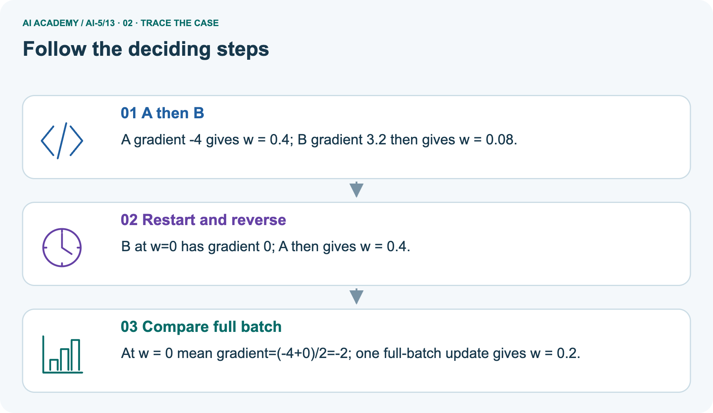
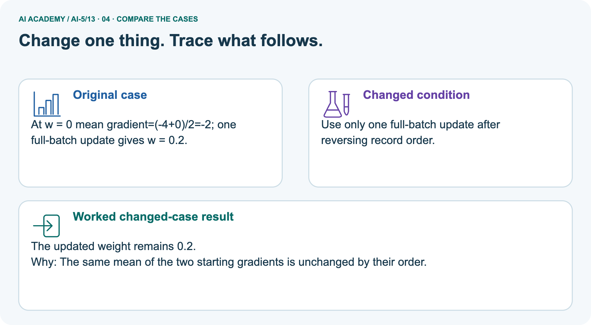
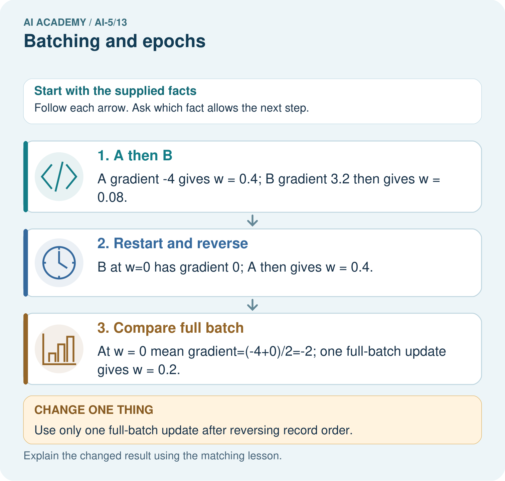
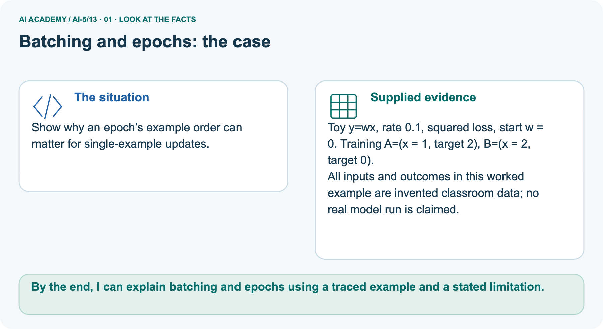
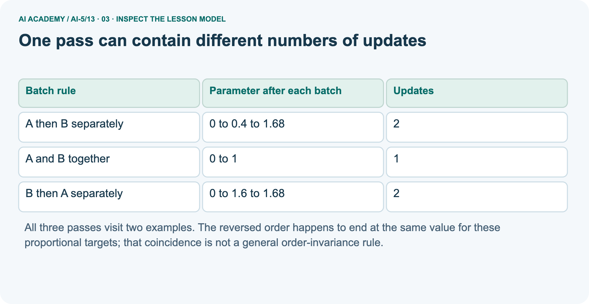

AI Academy · Level 5 · Grade 10 · Week 13 · Student lesson
Batching and epochs
Learn to understand, design, build, test and explain AI systems responsibly.
Project: Image-pattern Network Investigation
THE CONNECTED WEEK
Name the batch. Update the current state. Count the full pass.
Trace schedule-dependent updates and aggregate losses with correct case weights.
Keep one habit: Declared epoch rule → complete two-pair traces → pictured order counterexample → weighted frozen errors → independent new order comparison.
Main lesson · Section 1
When does the model change during a pass through the data?
Count examples,batches,updates and epochs separately.
Learning goals
I can distinguish an example a batch an update and an epoch.
I can trace parameter changes across successive batches.
I can calculate update counts and aggregate unequal batch losses correctly.
Retrieve the complete training loop
Close your notes first. A rough first answer helps us choose the right starting point; it is not a score for your ability.
Without opening the old lesson, explain one key idea from Training a small network. Give an example and a mistake that the idea helps you avoid.
Without opening the old lesson, explain one key idea from Gradients with a numerical check. Give an example and a mistake that the idea helps you avoid.
Without opening the old lesson, explain one key idea from Parameters and architecture. Give an example and a mistake that the idea helps you avoid.
After trying, check the relevant lesson or ask your teacher. Change the part of your explanation that the evidence shows was wrong.
Prerequisite and starting response
Week 12 printed states numbered 0 to 4. How many parameter updates occurred?
End goal
By the end, I can explain batching and epochs using a traced example and a stated limitation.
Earlier wording, alternatives and picture transcripts
Your learning target
Remember before reading
This week you will practise:
Distinguish an example a batch an update and an epoch
Trace parameter changes across successive batches
Calculate update counts and aggregate unequal batch losses correctly
Retrieve what you already know
This week’s end goal
Main lesson · Section 2
Declare one update per nonempty batch and keep the last batch
An epoch visits each training row once under this stated sampling rule.
Complete batch/update/epoch convention
In Week 12 every update used both training examples. We now keep the same network h = ReLU(x), y = vh, with only v trained, and divide the data into batches. In this lesson each nonempty batch produces exactly one update.
An epoch visits every training example exactly once, without replacement. These rules make the counts unambiguous.
Imagine five fictional records A through E in fixed order. With batch size 2, the groups are [A, B], [C, D] and [E]. Keep the smaller last batch.
One epoch has three batches and three updates; two epochs have six updates and ten example visits.
Five-record schedule counts
| Training rows | Batch size | Batch lengths | Updates per epoch |
|---|---|---|---|
| 5 | 2 | 2, 2, 1 | 3 |
| 5 | 5 | 5 | 1 |
| 5 | 1 | 1, 1, 1, 1, 1 | 5 |
Retained versus dropped incomplete batch
When the last batch is retained, updates per epoch equal the row count divided by batch size rounded up. A program that drops the final incomplete batch follows a different rule and omits examples in that pass.
Record the rule instead of silently changing the denominator.
Name supplied and missing facts
Main lesson · Section 3
Trace a parameter state before and after every batch
A full-batch mean and successive single-example updates are different schedules.
Complete data and batch-gradient definition
Use the two fictional pairs A = (1, 2) and B = (2, 4), start v = 0 and rate 0.1. For one pair with hidden value h, squared-error gradient is 2 times (vh - target) times h.
For a batch, average these gradients at the same current v. Apply one update, then recompute for the next batch.
Complete current-state batch traces
| Main data A(1, 2), B(2, 4); start v0, rate.1 | Current v before batch | Gradient at this v | New v after batch |
|---|---|---|---|
| Size1:Afirst | 0 | -4 | 0.4 |
| Size1:Bnext | 0.4 | -12.8 | 1.68 |
| Restart size 1:Bfirst | 0 | -16 | 1.6 |
| Then A | 1.6 | -0.8 | 1.68 |
| Restart size 2:AandBtogether | 0 | Mean(−4, −16)=−10 | 1 |
Two-record versus five-ID fixture and helper contract
The main executable uses exactly the two supplied numeric training pairs, not the five-ID counting example. Each new batch recomputes its gradient at the latest v; within one batch all per-row gradients use the same vbefore its one update. The main A/Borders happen to share final v1.68 but have different paths.
That coincidence does not prove order never matters; the pictured example uses different targets and shows different final weights. The helper requires nonempty rows and size≥1, and assumes integer size and finite numeric pairs/rate.
Assume finite numeric pairs, integer size and finite rate. With size 1, A gives gradient -4 and new v = 0.4. B then uses 0.4, giving prediction 0.8, residual -3.2 and gradient -12.8, so v becomes 1.68.
With size 2, both gradients are evaluated at v = 0; their mean is -10, producing v = 1.
Runnable retained-last-batch epoch
def epoch(v, rows, size, rate):
if not rows or size < 1:
raise ValueError("Need rows and positive batch size")
trace = []
for start in range(0, len(rows), size):
batch = rows[start:start + size]
hs = [max(0.0, x) for x, target in batch]
gradient = sum(2 * (v * h - target) * h
for h, (x, target) in zip(hs, batch)) / len(batch)
v = v - rate * gradient
trace.append(v)
return trace
rows = [(1.0, 2.0), (2.0, 4.0)]
print([round(v, 6) for v in epoch(0.0, rows, 1, 0.1)]) # [0.4, 1.68]
print([round(v, 6) for v in epoch(0.0, rows, 2, 0.1)]) # [1.0]Connect the diagram to update timing
Point to the input, the deciding step and the result in this week’s visual. Explain the same step in ordinary words. A picture helps when you can say what each part represents.
Earlier wording, alternatives and picture transcripts
Connect the picture and the explanation
Main lesson · Section 4
Change the batching schedule while retaining its full record
An update happens after a batch,not automatically after every example.
Current stale-gradient task
For A then B separately in the lesson, a learner computes both gradients at v = 0, then applies them to get v = 2. Explain the error and give the correct final value.
Predict the pictured reversed full batch
Change: Use only one full-batch update after reversing record order.
Check after predicting
Prediction: The updated weight remains 0.2.
Reason: The same mean of the two starting gradients is unchanged by their order.
Earlier wording, alternatives and picture transcripts
Compare a familiar case with a changed case
Change one thing in the pictured case
Main lesson · Section 6
See why order can matter after single-example updates
The next gradient sees the changed weight;the full-batch mean sees one saved state.
Complete pictured data and distinct scope
Show why an epoch’s example order can matter for single-example updates.
Toy y=wx, rate 0.1, squared loss, start w = 0. Training A=(x = 1, target 2), B=(x = 2, target 0).
All inputs and outcomes in this worked example are invented classroom data; no real model run is claimed.
The picture uses y=wx, start w0, rate.1, A(1, 2), B(2, 0), squared loss. AthenB:size 1 gradients−4 then3.2, give w.4 then.08. Restart BthenA:gradients 0 then−4, give w0 then.4. Full-batch mean at the same old w0is(−4+0)/2=−2, giving w.2; reversing the rows leaves that exact mean unchanged. These targets differ from the main A(1, 2)/B(2, 4)and the independent A(1, 1)/B(2, 0).
Trace both orders and the full-batch mean



Read the picture one step at a time
A single-example update changes the weight before the next example’s gradient is calculated. Reversing the example order can therefore change the path.
A full-batch update computes both gradients at the same starting weight and averages them before changing that weight. The distinction is when the update occurs, not whether the examples have different labels.
Predict one reversed full-batch update
Change one thing: Use only one full-batch update after reversing record order. Predict the result before checking the explanation. What remains the same?
Check after predicting



Explain update timing and fair-comparison limits
Different order effects do not mean a universally better batching strategy; compare declared schedules and budgets fairly.
Read the labelled picture: Why do the single-example orders finish at different weights? Point to the relevant step in the picture, then write the changed result and the rule or evidence that supports it.
Return to the main reversed-order trace
One pass can contain different numbers of updates
Earlier wording, alternatives and picture transcripts
Learn from the worked case
Cover the result before checking it. Say what is given, choose the procedure, and follow one step at a time. Then uncover the result and explain your first mismatch. Ask why a step is allowed, not only what number it produces.
A pictorial worked case: Batching and epochs
The facts we will use



Why this result follows
What this example does not establish
Main lesson · Section 7
Freeze one model before aggregating its loss
Weight unequal batch means by the number of cases they represent.
Training-time state changes and weighted aggregation
Batch losses observed during training can refer to different parameter values and different examples. They are not automatically the full training loss of the final model.
To compare final models, freeze each one and evaluate every training example again. Here full training MSE is 2.5 times (v - 2) squared: at v = 1 it is 2.5, and at v = 1.68 it is 0.256. These are training results only.
Even at one fixed model, averaging batch means without their sizes gives the wrong dataset mean when batches have different lengths. Suppose the squared errors on A to E are [1, 1, 4, 4, 9].
Batch means for lengths 2, 2, 1 are [1, 4, 9]. Full MSE is (2 times 1 + 2 times 4 + 1 times 9) / 5 = 3.8, not (1 + 4 + 9) / 3. Use example counts as weights.
Complete five-error weighted example
| Separate frozen-model squared-error fixture | Batch size | Batch MSE | Contribution to total squared error |
|---|---|---|---|
| A/Berrors1/1 | 2 | 1 | 2 |
| C/Derrors4/4 | 2 | 4 | 8 |
| Eerror9 | 1 | 9 | 9 |
| All five cases | 5 | (2+8+9)/5=3.8 | 19 |
| Wrong unweighted mean of means | Not one five-case average | (1+4+9)/3=14/3 | Overweights the single Ecase |
Try sizes3and1with different means
At one frozen model, batches of sizes 3 and 1 have mean squared errors 2 and 10. Find the full MSE and explain why the average of 2 and 10 is wrong.
Earlier wording, alternatives and picture transcripts
Locate the earliest unsupported step
Main lesson · Section 8
Practise schedule counts and state timing with less help
Keep update counts and example visits beside every reported epoch.
Current task and response
For 10 rows, batch size 4 and three epochs, retaining the final batch, list batch lengths and count total updates and example visits.
Supported W2record
Use workbook W2 for the connected example “Batching and epochs”. First fill the input and rule boxes. Try the middle steps before asking for a hint. After a hint, try the next step yourself.
| Plan | Do | Check |
|---|---|---|
| What is given? Which rule or procedure applies? | Record each intermediate step. | Does the result follow? What remains unknown? |
Explain your trace to a partner. Your partner points to one step to check. Swap roles on the next case. Each person writes their own explanation.
Individual misconception check
Use the worked case for Batching and epochs. Proposed explanation: “One epoch always means one update”. Decide whether this explanation is supported.
Point to the step or supplied fact that decides; explain your repair if needed.
Answer on your own before discussion. If you are unsure, say which step you need help with.
Pictured order reasoning
Why do the single-example orders finish at different weights? Point to the relevant step in the picture, then write the changed result and the rule or evidence that supports it.
Reserve the independent new data
This is supported practice. Keep the separately named independent case for an attempt before feedback.
Earlier wording, alternatives and picture transcripts
Practise with less help: Repair a stale gradient
Check your reasoning
Explain the picture
Main lesson · Section 9
Run a complete schedule,state and aggregation audit
Each fixture declares whether it supplies numeric training pairs,IDs for counting or frozen errors.
Current stale-gradient task and runnable epoch
For A then B separately in the lesson, a learner computes both gradients at v = 0, then applies them to get v = 2. Explain the error and give the correct final value.
def epoch(v, rows, size, rate):
if not rows or size < 1:
raise ValueError("Need rows and positive batch size")
trace = []
for start in range(0, len(rows), size):
batch = rows[start:start + size]
hs = [max(0.0, x) for x, target in batch]
gradient = sum(2 * (v * h - target) * h
for h, (x, target) in zip(hs, batch)) / len(batch)
v = v - rate * gradient
trace.append(v)
return trace
rows = [(1.0, 2.0), (2.0, 4.0)]
print([round(v, 6) for v in epoch(0.0, rows, 1, 0.1)]) # [0.4, 1.68]
print([round(v, 6) for v in epoch(0.0, rows, 2, 0.1)]) # [1.0]Complete schedule,invalid,missing and weighted-loss probes
| Complete batching probe | Expected result / action |
|---|---|
| Normal two rows, size 1, AthenB | Two updates:v0→.4→1.68 |
| Same two rows, size 2 | One mean-gradient update:v0→1 |
| Five ID-only rows, size 2, retain last | Batch lengths 2/2/1; 3 updates per epoch; 2 epochs=6 updates/10 visits |
| Five rows, size 5, 2 epochs | 2 updates/10 visits; same visits, different update budget |
| Empty rows or size 0 | ValueError:Need rows and positive batch size |
| Missing numeric training target | Outside complete-pair contract; review before calling |
| Eleven rows, size 4, drop incomplete last | Only8 visitsand2 updates; disclose 3 omitted rows, not full coverage |
| Frozen batch sizes 3/1, mean losses 2/10 | Full MSE(3×2+1×10)/4=4, not unweighted 6 |
| Both gradients computed at originalv 0 then applied sequentially | Stale Bgradient−16 givesv2; correct current Bgradient−12.8 givesv1.68 |
Predict,restart,trace or run,and aggregate correctly
Predict the complete schedule counts and numeric traces before running or paper-tracing epoch on its two provided numeric pairs. The five-ID schedules illustrate counts only; the separate five-error fixture illustrates frozen-model loss aggregation. Do not invent training measurements for those IDs.
For each numeric schedule, restart v0, record each batch’s current state and recomputed gradient, and evaluate the full training loss again after freezing. A passing count or lower training loss does not establish a universally better batch strategy or independent performance.
On paper, trace the supplied procedure. If code is provided, predict before running it in a local practice file. Never write an expected answer as though it were an observed run.
Keep the evidence ledger
| Record | Your evidence |
|---|---|
| Given input and fixed rule | |
| Prediction before checking | |
| Actual result, or “not run” | |
| First mismatch and one explanation | |
| Boundary or missing input and expected response |
Before trying: what do I expect, and why? While trying: which step could first go wrong? Afterwards: what did I actually observe, and what should change? Keep “not run” if you only traced the procedure.
Earlier wording, alternatives and picture transcripts
Predict, investigate and preserve the evidence
Plan → try → check
Main lesson · Section 14
Try alone: reverse a new pair’s single-example schedule
Use its own targets and restart the same original value before reversing.
Complete new independent schedule
Use A = (1, 1), B = (2, 0), h = ReLU(x), y = vh, v = 0 and rate 0.1. Train with size 1 for one epoch in A then B order, then restart at 0 and reverse the order. Show gradients and parameter values. Compare the final values.
First attempt and support record
Attempt this case before feedback. Record any help. Earlier examples below are further practice; a case already practised with feedback cannot establish fresh transfer.
Use feedback after trying
Attempt the independent case before hints. Record whether you worked alone, used a hint or followed a model. After feedback, fix the first unsupported step and explain why it changed.
A later check uses a changed case, not a copied answer.
Earlier wording, alternatives and picture transcripts
Independent case: Test order on a new case independently
Attempt this without hints
Use A = (1, 1), B = (2, 0), h = ReLU(x), y = vh, v = 0 and rate 0.1. Train with size 1 for one epoch in A then B order, then restart at 0 and reverse the order. Show gradients and parameter values. Compare the final values.
Record support used: none, hint or teacher explanation. After feedback, a different case is needed to demonstrate independence.
Use feedback to improve
Main lesson · Section 11
Save the schedule as part of the experiment
Example visits,updates,order and last-batch policy all matter to reproducibility.
Project artifact and evidence table
Add a labelled batching and epochs evidence sheet to Image-pattern Network Investigation. Show how you can distinguish an example a batch an update and an epoch.
Use the supplied fictional case and keep its inputs, intermediate steps, calculation or prediction, and limitation. Connect this record to last week’s record; a matching answer without a trace is insufficient.
| Project evidence | Record |
|---|---|
| Component and version | |
| Inputs permitted at prediction time | |
| Trace and comparison with earlier work | |
| Failure, limit and human review |
Actual run/trace and remaining limits
For your Image-pattern Network Investigation, save the input, procedure, observed result and limitation of this check.
Label this worked example as practice; use a different, previously unreviewed case when checking independent understanding.
Earlier wording, alternatives and picture transcripts
Evidence for your project
Main lesson · Section 16
Finish with one update count and one state-dependent gradient
Explain why equal epochs need not mean equal numbers of updates.
Retrieve and explain
Close your notes. Explain this goal in your own words: Distinguish an example a batch an update and an epoch
Plan a changed-case return
If you are unsure, return to the worked picture and explain one arrow. If you are ready, change an input or assumption and justify your prediction.
Save your workbook evidence. At the next review, try a different case before opening your old answer.
Reference bank and extra practice
Choose the reference that helps your next step.
Reference · Use the mathematical words precisely
Reference · Section 5
Reference · Use the mathematical words precisely
Connect each term to a value or step in the current example.
Vocabulary and your explanation
| Word | Meaning |
|---|---|
| Batch | A group of training examples used together to calculate one gradient here |
| Update | One application of the gradient and learning rate to the current parameters |
| Epoch | One pass through all training examples under the stated sampling rule |
| Batch size | The intended number of examples in each batch with a possible smaller final batch |
Extra challenge · Explain a stronger case
Reference · Section 10
Extra challenge · Explain a stronger case
Choose the next challenge after the main route.
Explain,repair and extend
For 10 rows, batch size 4 and three epochs, retaining the final batch, list batch lengths and count total updates and example visits.
At one frozen model, batches of sizes 3 and 1 have mean squared errors 2 and 10. Find the full MSE and explain why the average of 2 and 10 is wrong.
A program processes 11 rows using size 4 and drops the last incomplete batch. How many examples did it visit and how many updates occurred? What must its report disclose?
Explain → apply → challenge
Reference · Check the representation and its limits
Reference · Section 12
Reference · Check the representation and its limits
Use after practice;reserve the new independent A(1,1)/B(2,0)order comparison for the first individual attempt.
Current explanation and response
Equal epochs mean equal example visits under our rule, but changing batch size changes the number of updates. A comparison should report both counts, starting values, order, learning rate and the rule for the last batch.
Neither smaller batches nor more updates guarantee better independent performance.
Next week holds the batch rule fixed while comparing learning rates.
A program processes 11 rows using size 4 and drops the last incomplete batch. How many examples did it visit and how many updates occurred? What must its report disclose?
Extra practice · Revisit the complete trace
Reference · Section 13
Extra practice · Revisit the complete trace
Predict before reading the supplied steps.
Complete trace and evidence
Complete evidence record
One pass can contain different numbers of updates
Follow the input through the stated procedure to its result. Cover the result first, predict it, then explain every intermediate step. The text/table accompanies the figure so the example can be read without colour.
Reference · The earlier route checklist
Reference · Section 15
Reference · The earlier route checklist
Use one main route rather than repeating the lesson.
Targets,route and first prediction
Start with this question: Show why an epoch’s example order can matter for single-example updates.
| By the end, I can | How I will show it |
|---|---|
| Distinguish an example a batch an update and an epoch | Explain the deciding step, show a trace or test, and state one limit. |
| Trace parameter changes across successive batches | Explain the deciding step, show a trace or test, and state one limit. |
| Calculate update counts and aggregate unequal batch losses correctly | Explain the deciding step, show a trace or test, and state one limit. |
Remember → watch and explain → try with help → investigate → try independently → keep project evidence. Your teacher may spread this lesson across several classes.
Keep your first prediction. Compare it with what the evidence shows and explain any change.
Extra practice · Predict,check and repair
Reference · Section 17
Extra practice · Predict,check and repair
Keep supported feedback separate from the independent case.
First supported question and optional hint
Show why an epoch’s example order can matter for single-example updates.
Which labelled step matches this detail? At w = 0 mean gradient=(-4+0)/2=-2; one full-batch update gives w = 0.2.
1. Restart and reverse
2. A then B
3. Compare full batch
Hint if needed: Read the steps in the pictorial case. Match the supplied detail to the stage that performs or records it.
Practice 1: explain the deciding evidence
Check after the first attempt
After your attempt, compare with the supported explanation: Compare full batch At w = 0 mean gradient=(-4+0)/2=-2; one full-batch update gives w = 0.2.
A single-example update changes the weight before the next example’s gradient is calculated. Reversing the example order can therefore change the path.
A full-batch update computes both gradients at the same starting weight and averages them before changing that weight. The distinction is when the update occurs, not whether the examples have different labels.
Changed-case question and optional hint
Changed-case practice: Use only one full-batch update after reversing record order. Which conclusion is supported by the supplied facts?
1. The updated weight remains 0.2.
2. We can decide the result without examining the changed input or the procedure.
3. This one example guarantees correct results for every future input.
Hint if needed: Use the changed condition and the deciding step in the pictorial trace. The answer must say what follows from those facts.
Practice 2: explain the deciding evidence
Check after the changed attempt
After your attempt, compare with the supported explanation: The updated weight remains 0.2. The same mean of the two starting gradients is unchanged by their order.
Repair and retain the record
Review Training a small network (ai-5/12). Goal: Trace repeated forward loss gradient and update steps. Short practice: Which parameter changed, and which part was not trained?
Point to the relevant step in the picture, then write the changed result and the rule or evidence that supports it.. Return to this week and explain what you changed.
Review Gradients with a numerical check (ai-5/10). Goal: Estimate one partial derivative while other parameters stay fixed. Short practice: Why should the numerical checks perturb one coordinate at a time?
Point to the relevant step in the picture, then write the changed result and the rule or evidence that supports it.. Return to this week and explain what you changed.
Review Parameters and architecture (ai-5/7). Goal: Distinguish architectural choices from parameter values. Short practice: How many new parameters did that one hidden unit add?
Point to the relevant step in the picture, then write the changed result and the rule or evidence that supports it.. Return to this week and explain what you changed.
The browser lab lets you edit the supported Python examples already included in this lesson. Predict first, run, inspect the actual output or error, change one input, then run again.
Keep code, predictions, actual results and a reasoned revision together. On paper, label your result as a trace rather than an execution.
Use Download completed work in the hosted lesson to export your answers, reflections, practice feedback and code-run evidence. Open the HTML copy to read or print it.
Drafts stay in this browser when storage is available; clear drafts on a shared device.
Earlier wording, alternatives and picture transcripts
Use this supported practice once, in the browser or on paper. Keep the reserved independent assessment for a separate first attempt before teacher feedback.
Repair a missing building block
Predict, run and debug
Keep your completed work
Reference · Six-picture concept journey
Reference · Section 18
Reference · Six-picture concept journey
Choose the picture that supports the current explanation.
01. Batching and epochs: the case



Show why an epoch’s example order can matter for single-example updates. Supplied facts: Toy y=wx, rate 0.1, squared loss, start w = 0. Training A=(x = 1, target 2), B=(x = 2, target 0).
All inputs and outcomes in this worked example are invented classroom data; no real model run is claimed.
Point to the given fact that matters most. Explain why it matters.
02. Follow the deciding steps
A then B: A gradient -4 gives w = 0.4; B gradient 3.2 then gives w = 0.08. → Restart and reverse: B at w=0 has gradient 0; A then gives w = 0.4. → Compare full batch: At w = 0 mean gradient=(-4+0)/2=-2; one full-batch update gives w = 0.2.
Point to each numbered stage and explain which recorded input it uses.
03. One pass can contain different numbers of updates



One pass can contain different numbers of updates. A then B separately | 0 to 0.4 to 1.68 | 2. A and B together | 0 to 1 | 1. B then A separately | 0 to 1.6 to 1.68 | 2
Read the labels and values. Explain the relationship the model shows.
04. Change one thing. Trace what follows.
Original case: At w = 0 mean gradient=(-4+0)/2=-2; one full-batch update gives w = 0.2. Changed condition: Use only one full-batch update after reversing record order. Expected result: The updated weight remains 0.2.
Reason: The same mean of the two starting gradients is unchanged by their order.
Predict before checking the worked changed-case result. Name what changed and what the supplied facts allow you to conclude.
05. Connect the explanation to its limit


A single-example update changes the weight before the next example’s gradient is calculated. Reversing the example order can therefore change the path.
A full-batch update computes both gradients at the same starting weight and averages them before changing that weight. The distinction is when the update occurs, not whether the examples have different labels.
Limit: Different order effects do not mean a universally better batching strategy; compare declared schedules and budgets fairly.
Explain the case, then point to a limit on the claim.
06. Make the idea visible in your project


For your Image-pattern Network Investigation, save the input, procedure, observed result and limitation of this check.
Label this worked example as practice; use a different, previously unreviewed case when checking independent understanding. Draw your input, deciding step, result and limit.
Supported question: Why do the single-example orders finish at different weights? Point to the relevant step in the picture, then write the changed result and the rule or evidence that supports it.
Draw your project trace and justify the deciding step using evidence.